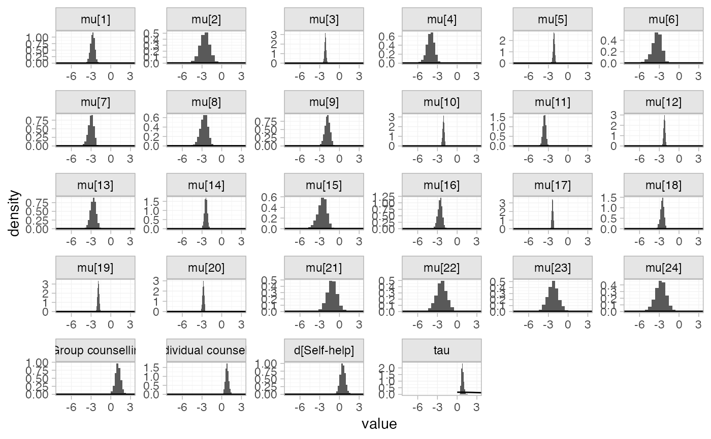
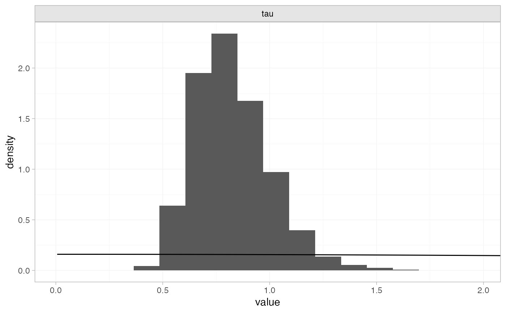

Produce plots comparing the prior and posterior distributions of model parameters.
Arguments
- x
A
stan_nmaobject- ...
Additional arguments passed on to methods
- prior
Character vector selecting the prior and posterior distribution(s) to plot. May include
"intercept","trt","het","reg", or"aux", as appropriate.- post_args
List of arguments passed on to ggplot2::geom_histogram to control plot output for the posterior distribution
- prior_args
List of arguments passed on to ggplot2::geom_path to control plot output for the prior distribution. Additionally,
ncontrols the number of points the density curve is evaluated at (default500), andp_limitscontrols the endpoints of the curve as quantiles (defaultc(.001, .999)).- overlay
String, should prior or posterior be shown on top? Default
"prior".- ref_line
Numeric vector of positions for reference lines, by default no reference lines are drawn
Details
Prior distributions are displayed as lines, posterior distributions are displayed as histograms.
Examples
## Smoking cessation NMA
# \donttest{
# Run smoking RE NMA example if not already available
if (!exists("smk_fit_RE")) example("example_smk_re", run.donttest = TRUE)
# }
# \donttest{
# Plot prior vs. posterior, by default all parameters are plotted
plot_prior_posterior(smk_fit_RE)

# Plot prior vs. posterior for heterogeneity SD only
plot_prior_posterior(smk_fit_RE, prior = "het")

# Customise plot
plot_prior_posterior(smk_fit_RE, prior = "het",
prior_args = list(colour = "darkred", size = 2),
post_args = list(alpha = 0.6))
 # }
# }